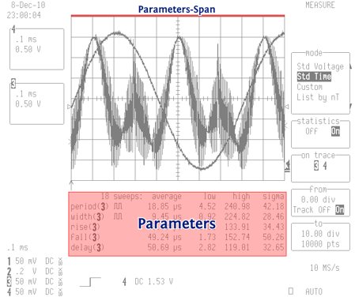
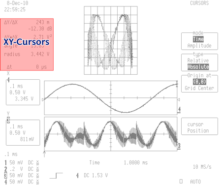

The colorizer accepts user defined settings when a file is passed with the -s switch. This file is a simple Windows ini style format consisting of various sections to define colors and geometry data for the colored regions.
The distribution for the colorizer comes with a set of predefined styles in ‘styles’ directory that define custom color settings. In most cases this is all you will want to change for a custom settings file and you can copy one of these styles to start out with an initial template. Once you have a completed settings file that you like you can optionally place it in the ‘styles’ directory to access it by logical name if desired.
Each settings file consists of a series of named sections marked in square brackets. Each section contains a series of key = value pairs, one per line. Any omitted keys will take their value from the defaults defined in default_settings.cfg. The keys are case insensitive.
You can define keys to be used as variables substituted in the values for other keys. A variable is substituted by referencing it with %(variable-name)s. Variables must appear in the same section where they will be referenced for substitution.
The "[colors]" section contains all of the color definitions for a color style. The color keys correspond to defined regions in the master default_settings.cfg file plus a few special colors for backgrounds and certain grid modes.
You can use a variety of formats for specifying a color:
ex: #fff, #00ff00
ex: rgb(0,12,200), rgb(100%, 50%, 25%)
ex: hsl(0, 100%, 25%)
ex: Red, red, blue, SlateGray
| Key | Description |
|---|---|
| Background | Overall background color |
| Grid-Background | Background of grids |
| Grid | Grid lines |
| Trace | Signal traces |
| Trace-Reconstruction | Color used for reconstructed trace segments that cross the grid lines |
These are the colors for the regions in each image.
| Key | Description |
|---|---|
| Time | Time in upper left corner |
| Channels | Channel list on left side |
| Channels-Text | Color for text inside channel list boxes |
| Channels-Background | Background fill for boxes in channel list |
| Timebase | Timebase in lower left side |
| Probes | Probe voltage and coupling in lower left corner |
| Left-Marker | Trigger level and trigger delay markers on left and bottom of grid |
| Right-Marker | Trigger level and trace offset markers on right of grid |
| Cursors | Cursor readout on bottom |
| Trigger | Trigger mode and settings on bottom |
| Menu | Menus on right side |
| Menu-Text | Color for text inside menu list boxes |
| Menu-Background | Background fill for boxes in menu list |
| Sample-Rate | Sample rate in lower right corner |
| Trig-Mode | Trigger mode |
The Parameter measurement and XY modes have special layouts with additional data readout regions. When one of these grid modes is detected in a captured image these color settings become active.
| Key | Description |
|---|---|
| Parameters | Parameter values in parameter grid mode |
| Parameters-Span | Bar over top of parameter mode grid showing span for measurements |
| XY-Cursors | XY cursor values in top left of XY grid modes |
|  |  |